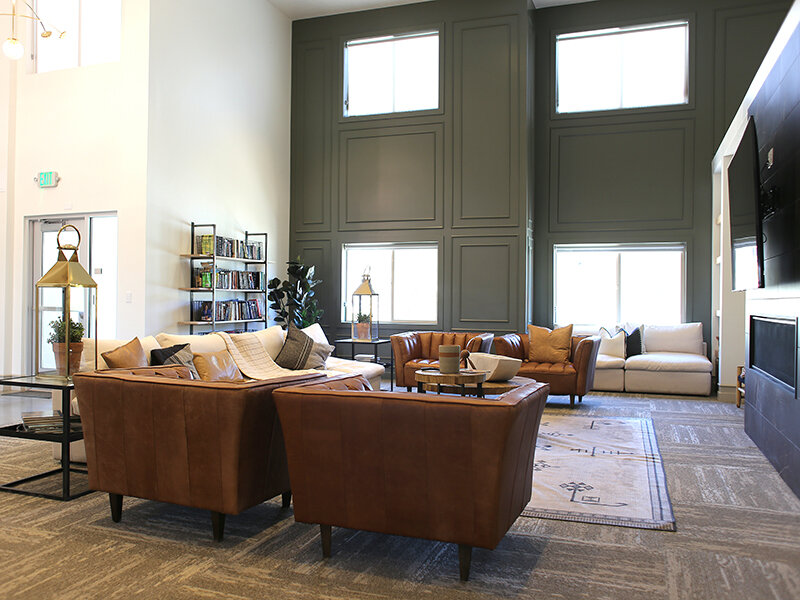
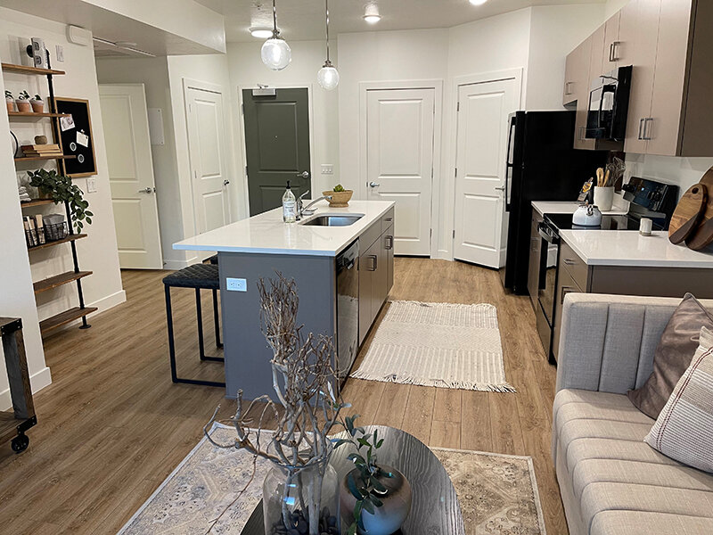

Apartments Apartment St George, UT | HOME / FLOOR PLANS & AVAILABILITY
Looking for the best senior community St. George has to offer? Look no further than Sky at Brio. We offer both 1 and 2-bedroom senior apartments in Washington, UT, in order to accommodate any lifestyle! Both come fully equipped with top-of-the-line interior features and provide access to our on-site luxury amenities. Find adventure beyond our senior apartments for rent near St. George by jumping on the nearby I-15 and discovering all that is Washington County. Explore our floor plan options and give us a call to come to see them in person here at Sky at Brio Senior Apartments!
Come see what makes us unique and join our waitlist to become a part of our community!


Imagine living in a place where every day feels like a vacation, where luxury meets convenience, and your neighbors become your friends. Sky at Brio is that place. With our stylish apartments and leisure amenities like the resort-style pool and game room, life here is vibrant and full of fun. It's a community where you can enjoy the golden years of your life in style, surrounded by the stunning southern Utah landscape.
What types of floor plans are available at Sky at Brio?
Sky at Brio offers 1 and 2-bedroom senior apartments, each fully equipped with modern amenities and designed to accommodate various lifestyles.
Can I bring my pet to Sky at Brio?
Absolutely, Sky at Brio is pet-friendly, welcoming pets as part of the community and ensuring they feel at home.
What makes Sky at Brio stand out in St. George?
Sky at Brio stands out for its luxury amenities, vibrant community, and the premium living experience it offers to seniors looking for a comfortable and engaging lifestyle.
How can I view the available apartments?
You can explore our floor plan options online and give us a call to schedule a personal tour to see them in person at Sky at Brio Senior Apartments. Or use the live 3D walkthroughs above.